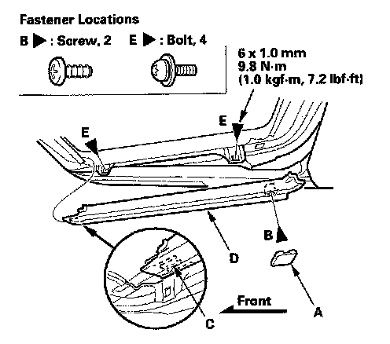
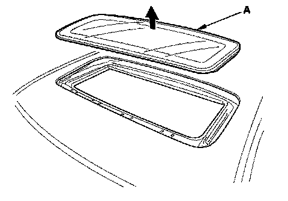

Sunroof / Moonroof: Service and Repair
Glass Replacement1. Tilt the glass all the way up.
2. Slide the sunshade all the way back.

3. Pry out the cap (A), remove the screw (B), release the hooks (C), and remove the bracket cover (D). Repeat on opposite side. Use a T25 TORX bit to remove the bolts (E) from the glass brackets (F) on both sides.

4. Remove the glass (A) by lifting it up. Do not damage the roof panel.
5. Install the glass in the reverse order of removal, and note these items:
- Apply medium strength type liquid thread lock to the glass mounting bolts before reinstallation.
- Reset the moonroof control unit.
- Adjust the glass height alignment.
6. Check for water leaks. Use free-flowing water from a hose without a nozzle. Do not use high-pressure water.
NOTE: It is normal for some water to seep past the moonroof into the moonroof frame, and exit through the drains.